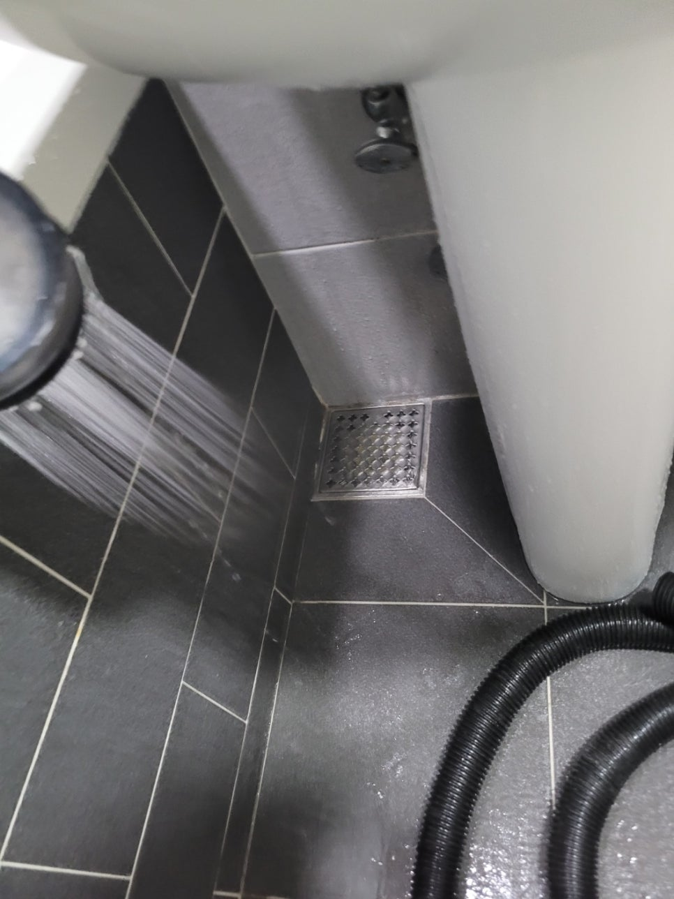
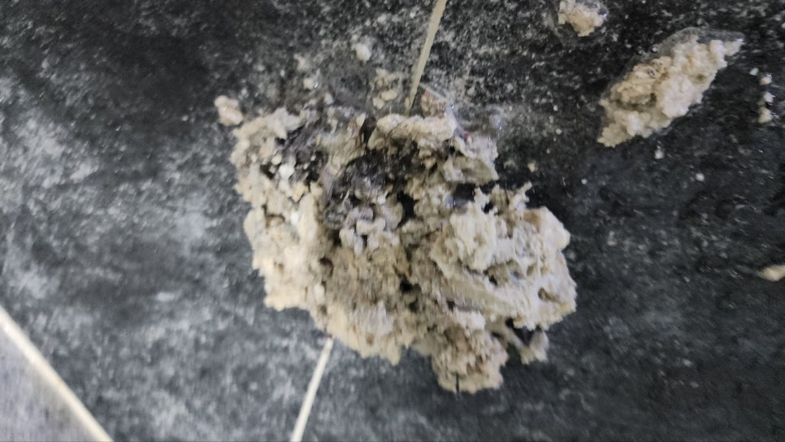
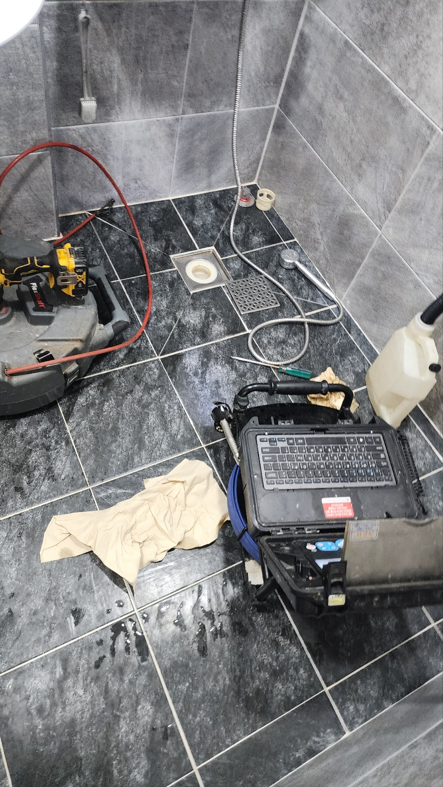
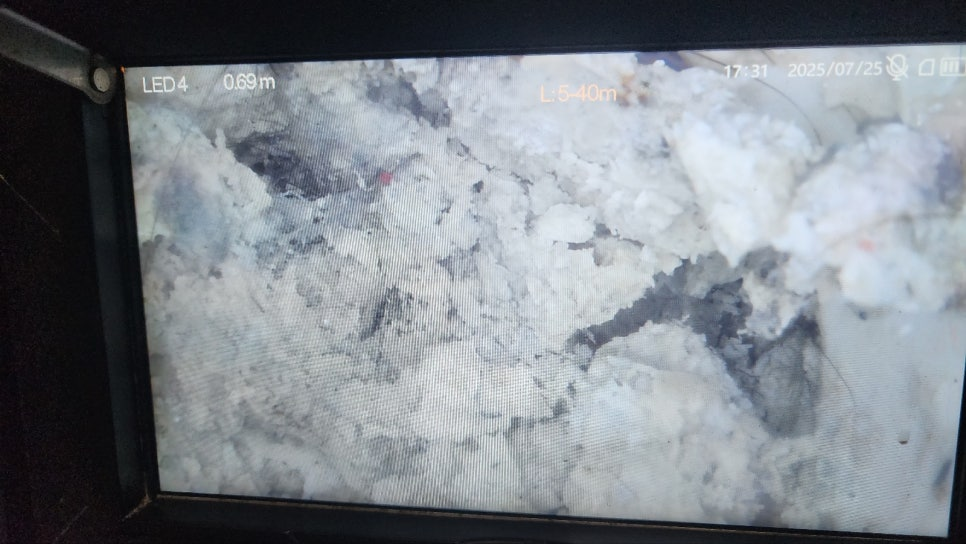
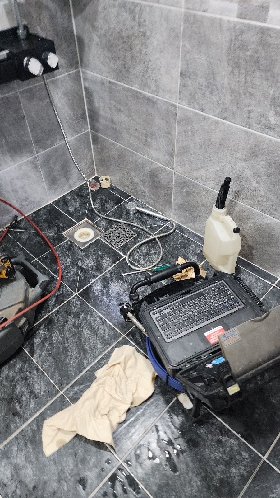
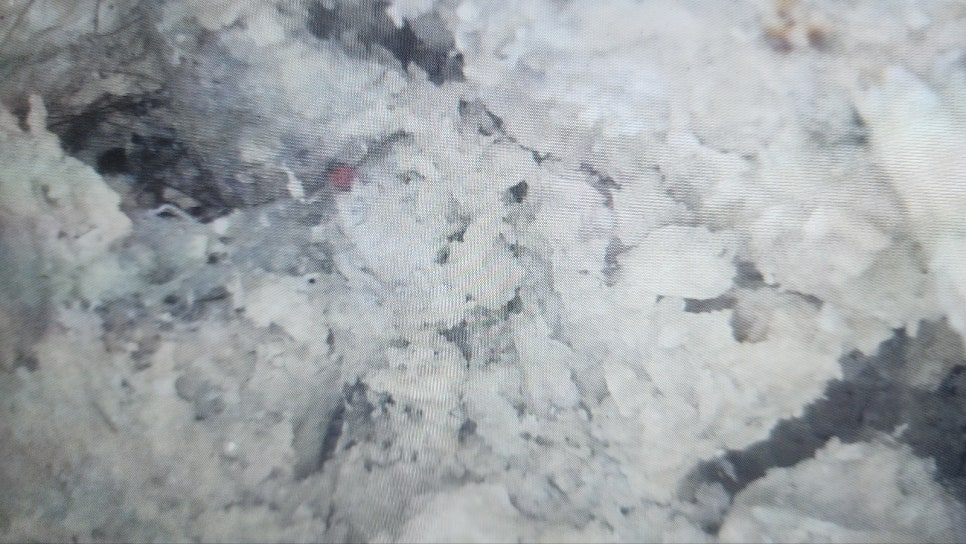
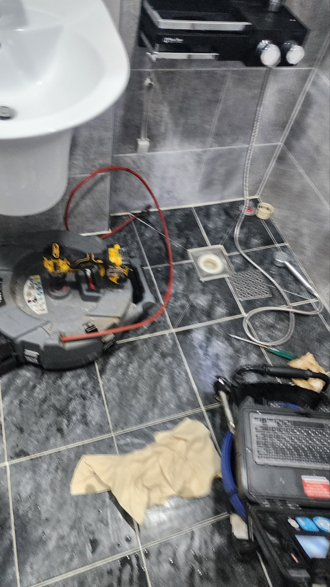
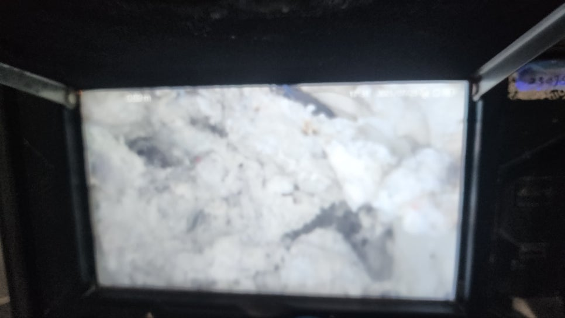

🏠 화성 남양 하수구막힘 화장실 역류 하수구뚫는업체
화성 남양 싱크대막힘 전문 시공 후기

📋 작업 개요
- 위치: 화성 남양, 남양, 화성
- 서비스 유형: 싱크대막힘, 변기막힘, 하수구막힘, 배관막힘, 맨홀막힘, 누수수리, 역류해결, 뚫는업체, 배관청소, 설비공사, 악취차단
- 작업 일시: 2025. 8. 1. 9:54
- 업체명: 하수구수사대 (010-5615-2118)
🔍 문제 상황
안녕하세요.
배관전문업체 "하수구수사대" 입니다.
화성 남양 하수구막힘 화장실 역류 하수구뚫는업체
물에 원활히 녹지 않는 고체 덩어리가 들어올 경우 배수관 내부는 화장실막힘 베란다막힘 뭐든지 여러가지 물질로 막혀버릴 수 있습니다.
그중에서 슬러지가 점액질로 응고되게 되면 더욱 딱딱한 덩어리가 만들어집니다.
가급적 단면이 정확하게 나올 수 있게 자주 배관 내부의 오염물 정비를 해주고 배수구 클리너 청소역시 주기적으로 진행을 해주셔야 해요.
이번에 간 장소는 하수구막힘 문제로 인해 다급히 시공을 요청해주셨던 현장이에요.
일반적으로 발생하는 화장실막힘 문제였는데요.
문제가 생긴 부위는 어디냐면 바로 메인 하수구였는데 여러 형식의 외부 물질이 적체되어 하수가 제대로 빠져나가지 않았어요.
일단 화장실의 경우 다양한 하수구 장치가 시공되어 있어 독립된 시설마다 하나씩 점검을 해야 하는 상태였어요.
간혹 막힘 부위만 빠르게 처리를 하고 작업을 마치는 업체들도 다수 있지만 화장실은 하수가 들어오는 부위가 많고 흘러온 오수의 유형에 따라 따로따로 관거가 공사되기 때문에 포괄적인 관리를 진행하고 자세한 정비를 해주셔야 해요.
내시경 카메라를 활용해 확인을 해 본 결과 화장실막힘 발생은 머리카락같은 찌꺼기가 발견됐어요.
아마도 세수대를 이용하면서 유입된 머리카락과 여러 종류의 찌꺼기가 다같이 결합되어 문제를 유발하게 된 것으로 진단을하게 되었어요.

🔎 원인 분석
💡 전문가 진단: 정밀 진단 장비를 사용하여 슬러지의 고착 여부를 판명하고 타격/세척 작업을 실시했습니다.
화장실에서 보통 이용하는 세정제 용품은 자체 점성이 함유되어 슬러지가 엉기면 금세 덩어리를 형성하게 되거든요!
시간이 지나면서 석회질의 물질과 동시에 뒤섞이면 견고한 덩어리가 될 수 있어요.
이와 같은 오염물의 구조는 관로를 한층 더 심하게 틀어막아 결국 관로 막힘이 일어날 수밖에 없어요.
고객님께서도 초반엔 오수의 배수가 순조롭게 이루어지지 않아 곤란했지만 심한 상태로 여기지는 않으셨다고 해요.
그러나 슬러지가 끊임없이 축적되면서 철저하게 단면을 막아버렸고 더러운 물이 역행하는 일이 발생했습니다.
뿐만 아니라 악취 문제도 과도하게 발생했다고 얘기해주셨는데 배관에 만들어진 이물질이 썩게된 것 같아요.
청결 부분에서도 멀쩡하지 않지만 식구들의 건강에도 부정적인 영향을 끼칠 수 있어 되도록 파이프 관리는 신속하게 해결해야하고 문제가 있다면 전문가에게 요청하는게 효과적이에요.
배관의 축적된 오염 물질 관리를 위해 일단 석션기를 사용해서 청소를 해나갔어요.
단면을 면밀히 들여다보면 오염물질이 들어가는 부분을 한가득 뒤덮고 있어 새로운 장비가 투입될 수 있는 틈이 마련되어 있지 않았는데요.
석션작업으로 최대한 많은 분량의 오염 물질을 빼내고 단면을 확보하며 집중적으로 슬러지를 없애드렸어요.
하수구 안쪽에 축적된 오염물질은 그 모양이 상당히 다양한만큼 장비 또한 배수관의 구조에 맞게 사용해야합니다.
스프링 시설 등을 동원하여 배수관의 쌓여 있는 외부 물질을 점차 제거해 드렸어요.
특히 배관의 단면이 달라지는 장소에서 오염 물질의 적체 현상이 과도하게 드러나고 있었어요.

🔧 작업 과정
이 부분은 오수가 제거돼도 유속이 순조롭게 이루어지지 않는 구역이라 점도가 있는 찌꺼기가 점차적으로 쌓이게 될 수 있는 장소이기도 한데요.
첫째로 스프링 장비 등을 활용하여 파이프의 단면을 차단하는 찌꺼기들을 대부분 처리하고 적당한 유속이 형성될 수 있도록 유지해드렸어요.
저희 예상보다 확인해야 할 장소가 더 많아서 조금 더 꼼꼼하게 수리가 진행되었어요.
끝내는 스케일링 작업을 하는 도중에 관로에 내구성을 망가뜨릴 수 있는 가능성이 있어 내시경 카메라 장비를 써서 수리를 마무리했습니다.
카메라 설비는 누적된 오염물의 많은 면적을 체크할 수 있어 더욱더 간단하게 하수구막힘 처리할 수 있어요.
관로에 대한 안전함은 공사자가 꼭 돌봐야 하는 부분인 만큼 숙련된 업체가 훨씬 더 수월하게 공사할 수 있을 거예요.
짐작하시는 것보다 찌꺼기를 청소하는 단계에서 배수관 자체가 망가지는 경우가 상당히 많거든요.
말씀드린 징후는 앞으로 누수를 초래하고 유출된 하수는 인근 토사 및 구조물을 파손하기 때문에 중대한 문제가 될 수 있습니다.
저희 업체 같은 경우 작업중에 꼭 내시경 장비를 쓰고 있으며 공사가 마무리되면 직접 공사 결과를 카메라 장비로 보여드리고 있습니다.
이렇게 하니 한층 더 오염 물질 제거에 있어 신뢰도가 올라가요.
하수관 막힘에 회수된 불순물만 해도 꽤 많은 분량이 제거되었습니다.
보통 저희가 활용하는 하수구 구조는 다양한 형태의 불순물이 들어오는 영역이라고 생각을해야해요.
이 과정에서 만들어진 점성이 같이 엉기면서 막힘 증상을 일으키게 돼요.
딱딱한 덩어리는 빠르게 썩기도 하고 때로는 파이프의 약한 곳에 문제를 발생시킬 수 있기 때문에 꼭 기술자에게 정비받을 수 있게 사전에 해결해야합니다.
배관속에 쌓여 있는 불순물의 상당 부분을 제거하여 단면을 깔끔하게 보존하고 적정 유속이 형성되도록 상태를 만들어드렸어요.
짐작보다 수거한 찌꺼기 자체가 많이 있다는 걸 확인하게 될 거예요.
카메라 장비를 사용하여 내부를 점검해보면 일반적으로 쓰고 있는 파이프의 크기가 매우 작다는걸 확인 가능합니다.
결과적으로 쓰는 사람이 올바른 관리를 해야만 단면을 지키고 알맞은 유속이 나타날 수 있게 배관을 사용할 수 있어요.
스케일링 과정으로 관리된 내부 상태를 확인되는 바와 같이 청결하게 작업된 사실을 볼 수 있습니다.
단면이 제대로 나타나면서 맨 처음 배관을 구상할 때 의도했던 통수량도 형성할 수 있습니다.
모든 절차는 사전에 의뢰인에게 면밀하게 안내를 드리며 수리를 진행한 후 최종 결과물도 빠짐없이 나누어 문제가 발생한 지점을 평소에도 관리가능하도록 자세히 알려드렸습니다.


✅ 작업 완료
고객님 스스로 시설에 대한 장단점을 제대로 파악하고있다면 화장실막힘 베란다막힘 무엇이든 관거의 내구성을 지키면서 시설의 수명도 장시간 유지 가능합니다.
하수구수사대 010 2340 2118
경기도 화성시 남양읍 남양로 697 3층 302호
#남양하수구막힘 #남양싱크대막힘 #남양싱크대역류 #남양배수관막힘 #남양배관뚫는곳 #남양설비 #남양맨홀막힘 #남양하수구뚫는업체 #남양변기막힘
#화성하수구막힘 #화성싱크대막힘 #화성싱크대역류 #화성하수구역류 #화성화장실막힘 #화성설비 #화성하수구뚫는곳 #화성하수구뚫는업체
#화성변기막힘




⚠️ 베란다 누수 및 방수 관리 방법
- ✅ 비가 많이 올 때 창틀 주변이나 아래층 천장에 얼룩이 생기는지 정기적으로 확인해 보세요.
- ✅ 우수관 주변 실리콘 마감이 들뜨거나 깨진 틈새가 있는지 손상 여부를 수시로 체크하세요.
- ✅ 베란다 바닥 타일의 줄눈(메지)이 소실되면 그 틈으로 물이 침투하여 누수가 유발됩니다.
- ✅ 누수 의심 증상 발견 시 방치하면 아래층 손실이 커지므로 즉시 전문가의 진단을 받으십시오.
💡 핵심 정리
- 확실한 장비 작업(내시경 점검 및 샤프트 스케일링)으로 원인을 뿌리 뽑습니다.
- 작업 후 1년 이내에 동일한 부위 재발 시 100% 무상 A/S 서비스를 보장합니다.
- 서울 · 경기 · 인천 전 지역에 24시간 언제든 긴급 출동할 수 있도록 항시 대기 중입니다.
❓ 자주 묻는 질문 (FAQ)
🚨 화성 남양 싱크대막힘 문제로 고민이신가요?
정확한 원인 진단과 확실한 시공으로 재발 없는 해결을 약속드립니다.
24시간 긴급 출동 | 서울 · 경기 · 인천 전지역 | 1년 내 재발 시 무상 A/S